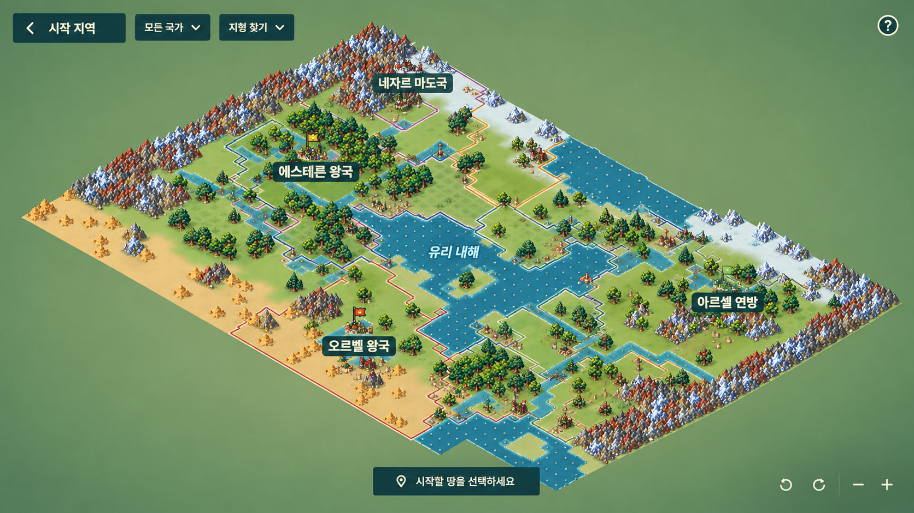

시작 지역 선택
대륙 탐색 → 부지 선택 → 시작 전 확인

지도부터 넓게국가와 지형은 작은 선택 도구로 묶고, 상세 정보는 부지를 고른 뒤 표시합니다.
선택한 땅만 간단히하단 한 줄에서 부지 이름과 주변 지형을 확인합니다. 정책과 세부 수치는 자세히에서 봅니다.
빈 땅을 보고 시작24 × 24 부지와 주변 숲·하천을 크게 봅니다. 함께할 종족을 고르고 시작합니다.
대륙 탐색 → 부지 선택 → 시작 전 확인

지도부터 넓게국가와 지형은 작은 선택 도구로 묶고, 상세 정보는 부지를 고른 뒤 표시합니다.
선택한 땅만 간단히하단 한 줄에서 부지 이름과 주변 지형을 확인합니다. 정책과 세부 수치는 자세히에서 봅니다.
빈 땅을 보고 시작24 × 24 부지와 주변 숲·하천을 크게 봅니다. 함께할 종족을 고르고 시작합니다.